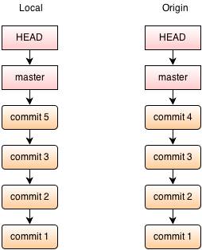
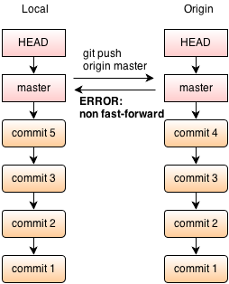

Parlez-vous Git ?
By Excilys
Loïc Ortola
Développeur Java/JEE chez Excilys.
Formateur Git/Java/JEE/Android
Sommaire
- Introduction
- Installation
- Basics
- Sous le capot
- Préparer un commit
- Les branches niv 1
- Repository distant: remote
- Les branches niv 2
- Workflows git/Bonnes pratiques
Introduction
"Git is a stupid content tracker" Scott Chacon, Git Internals
Git, c'est quoi?
Pourquoi Git?
- Développement non linéaire
- Développement distribué
- Léger, Performant
Ils utilisent Git:
Installation
Windows
http://code.google.com/p/msysgit/downloads/Linux
http://git-scm.com/downloadDebian ou Ubuntu: apt-get install git
Fedora ou Redhat: yum install git-core
Mac
http://code.google.com/p/git-osx-installerBasics
git config --global -e
[user]
name = Loïc Ortola
email = lortola@excilys.com
[alias]
lol = log --graph --decorate --pretty=oneline --abbrev-commit
tree = log --graph --decorate --pretty=oneline --abbrev-commit --all
branch-merged = "!f(){ for branch in `git branch -r --merged |
grep -v HEAD | grep -v origin/master | grep -v origin/release` ;
do git show --format=\"%C(yellow)%d %Cgreen%aN %C(cyan)%ar\" $branch |
head -n 1 ; done }; f"
branch-not-merged = "!f(){ for branch in `git branch -r --no-merged |
grep -v HEAD | grep -v origin/master | grep -v origin/release` ;
do git show --format=\"%C(yellow)%d %Cgreen%aN %C(cyan)%ar\" $branch |
head -n 1 ; done }; f"
[color]
branch = auto
diff = auto
interactive = auto
status = auto
Anatomie d'un projet git:
myproject/ |_ .git/ |_ .gitignore |_ README.md
Git, ca fonctionne comment?

- Un dossier de travail avec la version actuelle
- Espace de Stage
- Unité de changement = commit, versioning = hash
- Les commits se suivent (0,1, ou plusieurs parents) et forment des branches
- Ensemble du projet en local
Initialisation d'un repo:
Local:git initCentral:
git init --bareA partir d'un repo existant:
git clone source
source peut être (entre autres):
- un URI (https://github.com/excilys/monprojet.git)
- un dossier distant via ssh (git@monserver:~/monprojet.git)
- un dossier monté en local (/home/git/monprojet.git)
Sous le capot
Les Objets Git:
(objets immutables)
- Blob
- Tree
- Commit
- Tag
Les références Git:
(pointeurs sur un commit, peuvent changer)
- branch
- HEAD
- remote
Modèle de données

Exercice 1
Préparer un commit
Index/Stage:
Ajouter à la staging areagit add --allEnlever de la staging area
git rm fichier1.txt dossier1/fichier2.txt
git reset HEAD .Afficher l'état de la staging area
git statusAnnuler les changements d'un fichier par rapport à la HEAD (Attention! cette opération est irréversible!)
git checkout nomdufichier
.gitignore:
.idea/ *.svn .DS_Store .project .settings .classpath *.factorypath Thumbs.db bin target *~
Commit:
git commit -m "message de commit"
Exercice 1
Les branches (lvl 1)
Commandes:
Changer de branche:git checkout nomdelabrancheCréer une branche
git branch nomdelabrancheMerger la branche mabranche sur la branche actuelle
git merge mabrancheTagger un commit (pour une release)
git tag -a sha_du_commit -m "ma release vX.X.X"
Git merge
Git merge

Git merge
Nouvelle branche:

Git merge
On peut revenir sur une autre branche à tout moment:

Git merge
Les deux branches peuvent évoluer séparément:

Git merge
Merge:

Résolution de conflits
- Avec votre IDE
- Avec un merge tool: Meld (Mac/Linux), Kdiff3 (Linux), Diffmerge(Windows/Mac/Linux)
- Changer votre merge tool par défaut dans git:
git mergetool -t votremergetool
Les branches (lvl 2)
Git rebase
Git rebase
Git rebase
git@parlez-vous:$ git tree * 02bb51e (HEAD, master) commit 5 | * 05cecc3 (origin/master) commit 4 |/ * 9b89dff commit 3 * 3aca473 commit 2 * 11905f6 commit 1 git@parlez-vous:$ git push origin master To /git/origin ! [rejected] master -> master (non-fast-forward) error: failed to push some refs to '/git/origin' hint: Updates were rejected because the tip of your current branch is behind hint: its remote counterpart. Merge the remote changes (e.g. 'git pull') hint: before pushing again. hint: See the 'Note about fast-forwards' in 'git push --help' for details.
Git rebase
git@parlez-vous:$ git rebase origin/master First, rewinding head to replay your work on top of it... Applying: commit 5 git@parlez-vous:$ git tree * dc5704b (HEAD, master) commit 5 * 05cecc3 (origin/master) commit 4 * 9b89dff commit 3 * 3aca473 commit 2 * 11905f6 commit 1
Le git rebase
- Peut polluer une branche publique
- Est une bonne pratique si bien utilisé
Le git rebase interactive
- Modifier les fichiers et/ou le message du dernier commit:
git add ou git rm pour refaire votre index, puis:
git commit --amend -m "le nouveau message du commit"
1-Remonter dans l'historique des commits:
git rebase -i HEAD~3
2-Un script apparait, vous pouvez:
- "pick"->"edit" sur une ligne: stoppe le script pour editer le commit
- "pick"->"squash" sur une ligne: fusionne le commit dans le précédent (au dessus)
- Changer l'ordre des lignes -> changera l'ordre des commit
- Supprimer une ligne -> supprimera un commit
3-Faire vos modifications (git commit --amend...)
4-Remonter au dernier commit avec
git rebase ---continue
Les Workflows/Bonnes pratiques
Dos
- Une feature = une partie bien spécifique du code
- Une feature = une branche
- Spliter des changements en petites étapes = commit
- Commiter le plus souvent possible
- Faire une review du code avant commit
Don'ts
- Developper sur le master
- Developper sur la branche de developpement
- Faire un rebase sur une branche impliquant plusieurs développeurs
- Supprimer des branches non mergées
- Utiliser git rebase interactive sur des commit déjà poussés sur le repo central
Problématique
Comment optimiser le travail collaboratif?Workflows
- Centralized Workflow:
- Feature Branch Workflow:
- Gitflow Workflow:
- Forking Workflow:
tout sur le master
une feature = une branche, pull request pour merger sa branche sur le master => code review
plusieurs types de branches, des commandes pour faciliter les opérations
un développeur = 1 repo local et 1 repo distant. Le repo central est uniquement géré par le project manager
Gitflow
- Centralized Workflow:
- Feature Branch Workflow:
- Gitflow Workflow:
- Forking Workflow:
tout sur le master
une feature = une branche, pull request pour merger sa branche sur le master => code review
plusieurs types de branches, des commandes pour faciliter les opérations
un développeur = 1 repo local et 1 repo distant. Le repo central est uniquement géré par le project manager